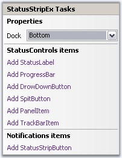

Clicking the Smart Tag of the StatusStripEx, displays the below Tasks window. This window lets you add ToolStripStatus Items.

Figure 1406: Tasks Windows of StatusStripEx
The options are,
· Dock - Provides docking options for StatusStripEx control.
StatusControl Items
· Add StatusLabel - Adds a status label item.
· Add ProgressBar - Adds a ProgressBar item.
· Add DropDownButton - Adds a dropdownbutton item.
· Add SplitButton - Adds a split button item.
· Add PanelItem - Adds a Panel item.
· Add TrackBar Item - Adds a TrackBar item.
Notifications Items
· Add StatusStripButton - Adds a Button item.
See Also
Creating a StatusStripEx, ColorSchemes for StatusStripEx